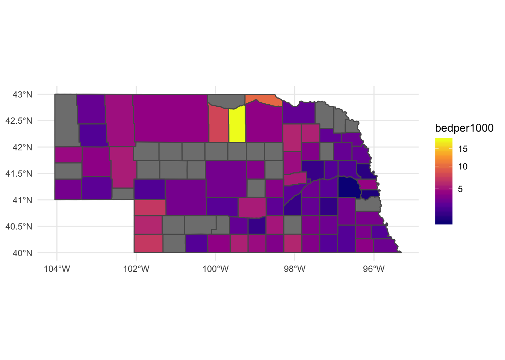

Chapter 21 Geographic queries
## Warning: package 'scales' was built under R version 3.5.2##
## Attaching package: 'scales'## The following object is masked from 'package:purrr':
##
## discard## The following object is masked from 'package:readr':
##
## col_factor## Reading layer `Hospitals' from data source `/Users/mwaite3/Box/BookProjects/DataJournalismWithR/data/Hospitals/Hospitals.shp' using driver `ESRI Shapefile'
## Simple feature collection with 7581 features and 32 fields
## geometry type: POINT
## dimension: XY
## bbox: xmin: -176.6403 ymin: -14.29024 xmax: 145.7245 ymax: 71.29285
## epsg (SRID): 4326
## proj4string: +proj=longlat +datum=WGS84 +no_defs## Reading layer `cb_2018_us_county_5m' from data source `/Users/mwaite3/Box/BookProjects/DataJournalismWithR/data/cb_2018_us_county_5m/cb_2018_us_county_5m.shp' using driver `ESRI Shapefile'
## Simple feature collection with 3233 features and 9 fields
## geometry type: MULTIPOLYGON
## dimension: XY
## bbox: xmin: -179.1473 ymin: -14.55255 xmax: 179.7785 ymax: 71.35256
## epsg (SRID): 4269
## proj4string: +proj=longlat +ellps=GRS80 +towgs84=0,0,0,0,0,0,0 +no_defs## Joining, by = "GEOID"## Warning: Column `GEOID` joining factors with different levels, coercing to
## character vector
## COUNTY total_beds
## 1 DOUGLAS 2479
## 2 LANCASTER 984
## 3 BUFFALO 261
## 4 SARPY 176
## 5 SCOTTS BLUFF 166
## 6 ADAMS 161
## 7 HALL 159
## 8 MADISON 131
## 9 LINCOLN 116
## 10 DODGE 81
## 11 DAWSON 58
## 12 OTOE 54
## 13 PLATTE 51
## 14 GAGE 50
## 15 HOLT 43
## 16 SALINE 43
## 17 PIERCE 40
## 18 YORK 38
## 19 ANTELOPE 37
## 20 CUSTER 35
## 21 BOONE 25
## 22 BOX BUTTE 25
## 23 CHERRY 25
## 24 CHEYENNE 25
## 25 COLFAX 25
## 26 CUMING 25
## 27 DAWES 25
## 28 HOWARD 25
## 29 NUCKOLLS 25
## 30 PHELPS 25
## 31 RED WILLOW 25
## 32 SHERIDAN 25
## 33 WASHINGTON 25
## 34 WAYNE 25
## 35 RICHARDSON 24
## 36 ROCK 24
## 37 SEWARD 24
## 38 BROWN 23
## 39 KNOX 23
## 40 CHASE 22
## 41 THURSTON 21
## 42 BOYD 20
## 43 BUTLER 20
## 44 FILLMORE 20
## 45 FURNAS 20
## 46 MERRICK 20
## 47 MORRILL 20
## 48 PERKINS 20
## 49 HARLAN 19
## 50 NANCE 19
## 51 THAYER 19
## 52 BURT 18
## 53 JOHNSON 18
## 54 KEITH 18
## 55 JEFFERSON 17
## 56 NEMAHA 16
## 57 POLK 16
## 58 SAUNDERS 16
## 59 VALLEY 16
## 60 DUNDY 14
## 61 FRANKLIN 14
## 62 HAMILTON 14
## 63 WEBSTER 13
## 64 KIMBALL 12
## 65 PAWNEE 11
## 66 GARDEN 10
## 67 KEARNEY 10## sum(total_beds)
## 1 2641nepop <- get_acs(geography = "county",
variables = c(population = "B01003_001"),
state = "NE",
year = 2018)## Getting data from the 2014-2018 5-year ACS
## NAME.x bedper1000 geometry
## 1 Rock 17.7777778 MULTIPOLYGON (((-99.67768 4...
## 2 Boyd 9.7943193 MULTIPOLYGON (((-99.25396 4...
## 3 Brown 7.6974565 MULTIPOLYGON (((-100.1985 4...
## 4 Dundy 6.9204152 MULTIPOLYGON (((-102.0519 4...
## 5 Perkins 6.8799450 MULTIPOLYGON (((-102.0518 4...
## 6 Chase 5.8918050 MULTIPOLYGON (((-102.0518 4...
## 7 Nuckolls 5.8479532 MULTIPOLYGON (((-98.27357 4...
## 8 Antelope 5.8066541 MULTIPOLYGON (((-98.30024 4...
## 9 Pierce 5.5889339 MULTIPOLYGON (((-97.83443 4...
## 10 Harlan 5.5264689 MULTIPOLYGON (((-99.63046 4...
## 11 Garden 5.3763441 MULTIPOLYGON (((-102.6776 4...
## 12 Nance 5.3460889 MULTIPOLYGON (((-98.29134 4...
## 13 Buffalo 5.3232715 MULTIPOLYGON (((-99.42576 4...
## 14 Adams 5.0976791 MULTIPOLYGON (((-98.72439 4...
## 15 Sheridan 4.7764616 MULTIPOLYGON (((-102.7921 4...
## 16 Boone 4.7054395 MULTIPOLYGON (((-98.2956 41...
## 17 Franklin 4.6573520 MULTIPOLYGON (((-99.1794 40...
## 18 Scotts Bluff 4.5786788 MULTIPOLYGON (((-104.0529 4...
## 19 Douglas 4.4667311 MULTIPOLYGON (((-96.47072 4...
## 20 Cherry 4.3177893 MULTIPOLYGON (((-102.0825 4...
## 21 Holt 4.1971694 MULTIPOLYGON (((-99.25704 4...
## 22 Furnas 4.1788550 MULTIPOLYGON (((-100.1978 4...
## 23 Morrill 4.1313778 MULTIPOLYGON (((-103.3704 4...
## 24 Pawnee 4.1106129 MULTIPOLYGON (((-96.46367 4...
## 25 Howard 3.9032006 MULTIPOLYGON (((-98.74433 4...
## 26 Valley 3.7878788 MULTIPOLYGON (((-99.21202 4...
## 27 Thayer 3.7269517 MULTIPOLYGON (((-97.82082 4...
## 28 Madison 3.7254010 MULTIPOLYGON (((-97.83454 4...
## 29 Webster 3.6404369 MULTIPOLYGON (((-98.72683 4...
## 30 Fillmore 3.5880875 MULTIPOLYGON (((-97.82478 4...
## 31 Johnson 3.4635367 MULTIPOLYGON (((-96.46363 4...
## 32 Otoe 3.3970810 MULTIPOLYGON (((-96.46376 4...
## 33 Lincoln 3.2737843 MULTIPOLYGON (((-101.2697 4...
## 34 Kimball 3.2724298 MULTIPOLYGON (((-104.0535 4...
## 35 Custer 3.2317636 MULTIPOLYGON (((-100.2512 4...
## 36 Lancaster 3.1732313 MULTIPOLYGON (((-96.91349 4...
## 37 Polk 3.0447193 MULTIPOLYGON (((-97.82826 4...
## 38 Saline 3.0095185 MULTIPOLYGON (((-97.3684 40...
## 39 Richardson 2.9966288 MULTIPOLYGON (((-96.01018 4...
## 40 Thurston 2.9411765 MULTIPOLYGON (((-96.8225 42...
## 41 Dawes 2.8102518 MULTIPOLYGON (((-103.5051 4...
## 42 Cuming 2.7805583 MULTIPOLYGON (((-97.01936 4...
## 43 Burt 2.7573529 MULTIPOLYGON (((-96.55487 4...
## 44 York 2.7538227 MULTIPOLYGON (((-97.82629 4...
## 45 Phelps 2.7412281 MULTIPOLYGON (((-99.64346 4...
## 46 Knox 2.7186761 MULTIPOLYGON (((-98.30977 4...
## 47 Wayne 2.6689442 MULTIPOLYGON (((-97.36772 4...
## 48 Hall 2.5919828 MULTIPOLYGON (((-98.72198 4...
## 49 Merrick 2.5631167 MULTIPOLYGON (((-98.28658 4...
## 50 Cheyenne 2.5375558 MULTIPOLYGON (((-103.3823 4...
## 51 Butler 2.4792364 MULTIPOLYGON (((-97.36819 4...
## 52 Dawson 2.4365653 MULTIPOLYGON (((-100.2242 4...
## 53 Jefferson 2.3650529 MULTIPOLYGON (((-97.3692 40...
## 54 Colfax 2.3234201 MULTIPOLYGON (((-97.25258 4...
## 55 Gage 2.3153508 MULTIPOLYGON (((-96.91641 4...
## 56 Red Willow 2.3135295 MULTIPOLYGON (((-100.761 40...
## 57 Nemaha 2.2844089 MULTIPOLYGON (((-96.06701 4...
## 58 Box Butte 2.2544864 MULTIPOLYGON (((-103.4445 4...
## 59 Keith 2.2224966 MULTIPOLYGON (((-102.0555 4...
## 60 Dodge 2.2081073 MULTIPOLYGON (((-96.90592 4...
## 61 Platte 1.5425098 MULTIPOLYGON (((-97.83049 4...
## 62 Kearney 1.5262515 MULTIPOLYGON (((-99.17925 4...
## 63 Hamilton 1.5253868 MULTIPOLYGON (((-98.28258 4...
## 64 Seward 1.4012962 MULTIPOLYGON (((-97.36812 4...
## 65 Washington 1.2364608 MULTIPOLYGON (((-96.44478 4...
## 66 Sarpy 0.9868181 MULTIPOLYGON (((-96.33287 4...
## 67 Saunders 0.7610350 MULTIPOLYGON (((-96.90823 4...
## 68 Blaine NA MULTIPOLYGON (((-100.2676 4...
## 69 McPherson NA MULTIPOLYGON (((-101.4065 4...
## 70 Arthur NA MULTIPOLYGON (((-101.9855 4...
## 71 Thomas NA MULTIPOLYGON (((-100.8461 4...
## 72 Clay NA MULTIPOLYGON (((-98.2781 40...
## 73 Stanton NA MULTIPOLYGON (((-97.3684 42...
## 74 Hitchcock NA MULTIPOLYGON (((-101.3255 4...
## 75 Hayes NA MULTIPOLYGON (((-101.3454 4...
## 76 Hooker NA MULTIPOLYGON (((-101.4266 4...
## 77 Grant NA MULTIPOLYGON (((-102.0666 4...
## 78 Sherman NA MULTIPOLYGON (((-99.20326 4...
## 79 Wheeler NA MULTIPOLYGON (((-98.76116 4...
## 80 Logan NA MULTIPOLYGON (((-100.7148 4...
## 81 Greeley NA MULTIPOLYGON (((-98.75222 4...
## 82 Cass NA MULTIPOLYGON (((-96.46386 4...
## 83 Keya Paha NA MULTIPOLYGON (((-100.1984 4...
## 84 Loup NA MULTIPOLYGON (((-99.68696 4...
## 85 Sioux NA MULTIPOLYGON (((-104.0531 4...
## 86 Dakota NA MULTIPOLYGON (((-96.72662 4...
## 87 Dixon NA MULTIPOLYGON (((-97.01779 4...
## 88 Deuel NA MULTIPOLYGON (((-102.6209 4...
## 89 Frontier NA MULTIPOLYGON (((-100.7812 4...
## 90 Gosper NA MULTIPOLYGON (((-100.0951 4...
## 91 Cedar NA MULTIPOLYGON (((-97.48492 4...
## 92 Banner NA MULTIPOLYGON (((-104.0529 4...
## 93 Garfield NA MULTIPOLYGON (((-99.22273 4...